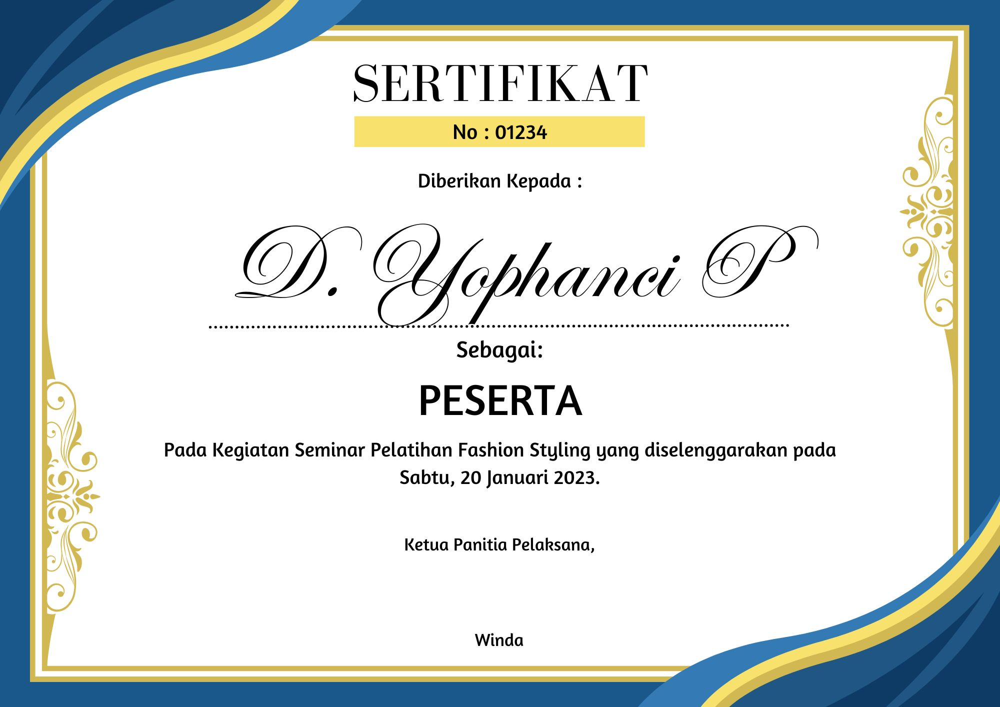
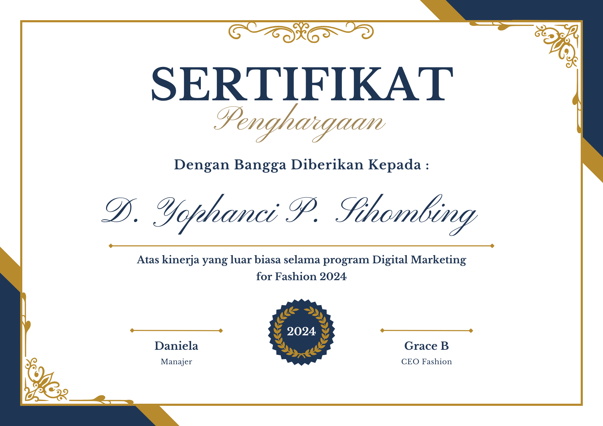

Saya adalah seorang fashion enthusiast yang aktif membagikan tren atasan wanita kekinian 2025
melalui blog dan komunitas online. Dengan pengalaman mengelola blog, toko online, serta
mengikuti berbagai pelatihan fashion, saya berkomitmen untuk terus berkreasi dan berbagi
inspirasi gaya terbaru.
Kontak
Email: yophan@example.com
WhatsApp: +62 812-3456-7890
Riwayat Pendidikan
TK Santa Lusia, Lintong Nihuta (2009 - 2010)
SDN 173324 (2011 - 2017)
SMP Negeri 2 (2017 - 2020)
SMAS Katolik Sibolga (2020 - 2023)
S1 Bisnis, Universitas Indonesia (2023 - sekarang)
Pengalaman
Mengelola blog fashion bertema atasan wanita (2024 - sekarang)
Menjalankan toko online atasan wanita (2023 - sekarang)
Kontributor artikel fashion untuk komunitas online (2022 - sekarang)
Keahlian
Content Writing Fashion: menulis artikel tren fashion untuk blog
Mix & Match Outfit: mengombinasikan berbagai atasan dan aksesori
Fotografi Produk: memotret dan mengedit foto produk fashion
Digital Marketing untuk Fashion: promosi melalui media sosial & marketplace
Trendspotting: menganalisis tren fashion terkini
Sertifikat
Sertifikat Fashion Styling (2023)

Sertifikat Digital Marketing for Fashion (2024)
